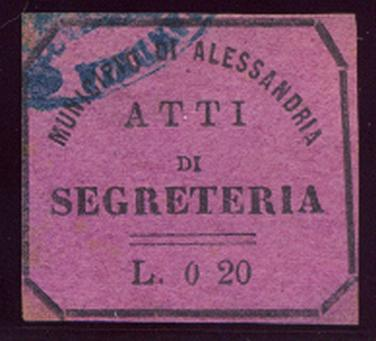
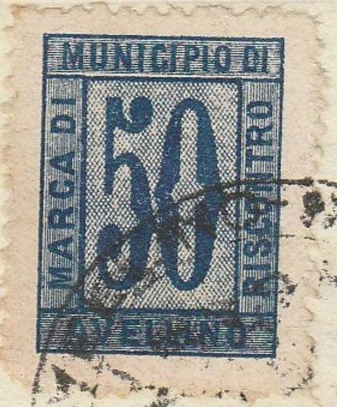
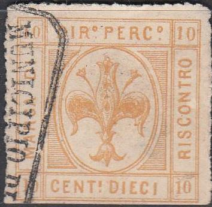
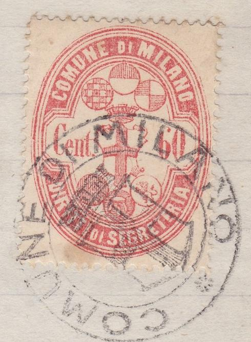
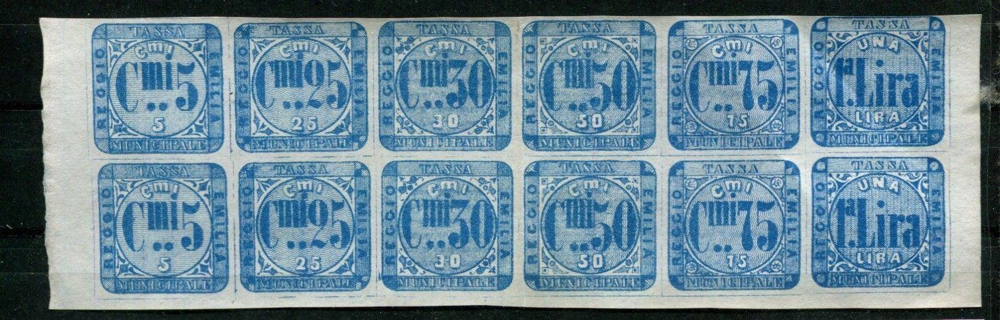
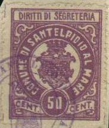
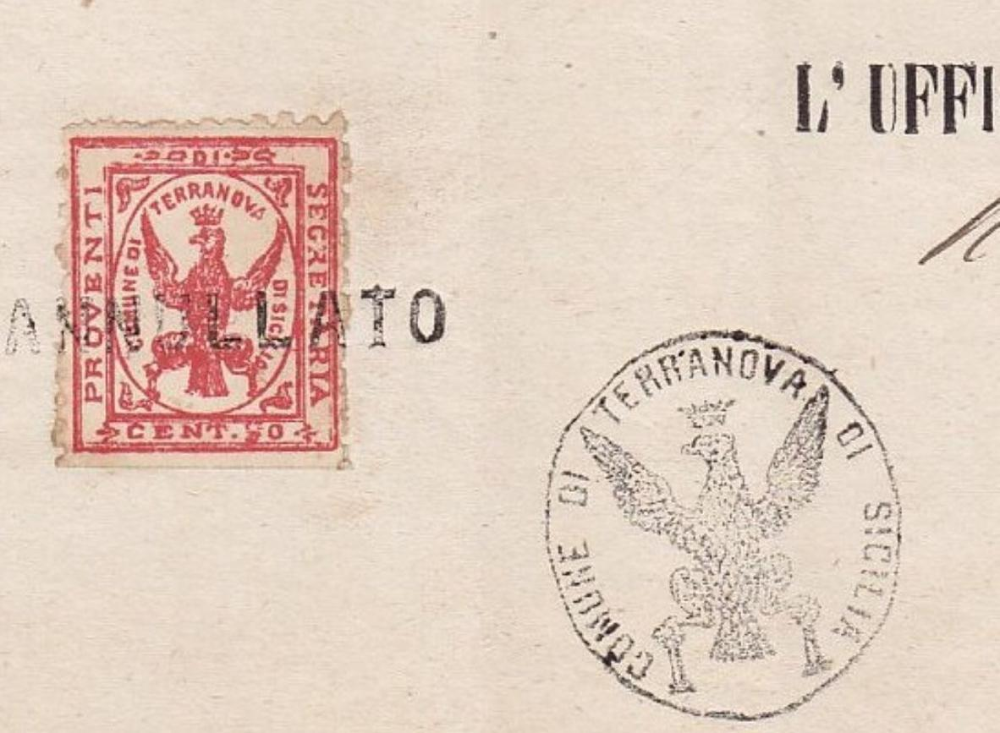
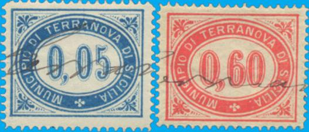

Return To Catalogue - Italy fiscal stamps, municipal stamps, part 1 - Italy fiscal stamps, municipal stamps, part 2 - Italy overview
Note: on my website many of the
pictures can not be seen! They are of course present in the
catalogue;
contact me if you want to purchase the catalogue.
There are many local fiscal stamps of Italy, even the famous
Forbin catalogue does not list them, but mentions that in 1915
there were already 7000 to 8000 different local fiscal stamps in
Italy. A book seems to exist on this subject (I haven't seen it
myself): 'Italian Municipals' by J.B. Moens (1892), it has been
reprinted by Barata in 1994 (80 pages). see also
http://www.italianmunicipalstamps.alexkemura.co.uk/
Apparently, the printers Smorti and Pineider from Florence
printed large amounts of these stamps with no townname but blank
center (in which they could later insert arms or other imagery)
which they tried to sell to towns and villages, most of these
stamps were later sold for collector's purposes only. According
to Gerhard Lang, the Smorti-project was actually driven by Usigli
and de Torres (with Bonasi as well being involved?), he says 40
cities were targeted (while Diena states only 18).
For these 'swindle' issues of the Italian municipal stamps, click here
Other municipal stamps which were actually used?:


Alessandria


Ancona, the first stamp only has inscription "TASSA
D'UFFICIO COMUNALE" (no city name).

Augusta

Avelino


"MARCA DI RISCONTRO MUNICIPIO DI BAGNO DI ROMAGNA"

Bari on a document

Bari


"PONTIFICIA SOCIETA OLEOGRAFICA Bologna", also a
"DIRETTI DI SECRETERIA" and "DIRETTI DI
UFFICIO"

Butera

Capurso: Imperforate proof, normal stamps are perforated, the
following values exist: 20 c red, 30 c lilac, 50 c violet, 1 L
green, 2 L yellow, 5 L brown, 6 L black and green.

Castellamare Adriatico

Citta di Castello
Cuneo
 

Firenze, no city name indicated.

Firenze

Gallarate

Messina

Milano


Modena; "DIRITTI D'UFFIZIO", no city name indicated.

Moncalieri

Napoli
"CITA DI NAPOLI IMPOSTA DI SOGGIRONO"; in this design I
have seen: 0,25 L blue and black, L1,00 orange and black and
L5,00 lilac and black.

Novara

Pisa, I've also seen the value 20 c green

San Giuliano Terme (or Bagni San Giuliano)
"COMUNE DI CIVITAVECCHIA DIRRIT DI SEGRETERIA"; in this
design I have seen 10 c brown, 20 c green and 60 c red
"MUNICIPO CIVITAVECCHIA"; arms in square on white
background; I have seen 10 c brown, 20 c green, 60 c red, 1 L
blue, 2 L light green and 5 L orange
"MUNICIPO CIVITAVECCHIA"; arms in square on lined
background; 20 c green and 50 c lilac
"COMUNE DI CIVITAVECCHIA DIRITTI DI SEGRET EDI STATO
CIV."; 20 c green
"MUNICIPIO DI CUNEO"
"REGGIO CALABRIA"



Rome (Roma), Romulus and Remulus and the wolf in an ellipse, no
city name indicated.
Rome, "DIRITTI DI SEGRETERIA", it also exists with
overprint "Supplemento pro lotta antitubercolare" or
"Carta identita". A similar design exists with
inscription "DIRITTI DI STATO CIVILE".

Sambuca Pistolese


Tempio

Teramo

Terranova di Sicilia (nowadays called Gela) 1879 issue. The
following values exist: 20 c blue, 50 c red, 60 c orange, 2 L
yellow, 3 L green and 5 L brown.


Tiriolo
Treviso
"COMUNE DI VENEZIA STAZIONE DI CURA SOGGIORNO E
TURISMO"


"MARCA DI RISCONTRO COMUNE DI VENEZIA", 1 L blue. Also
another design in 10 c orange and 20 c green.

Veroli

Verona

Voltri
Stamps - Francobolli - Briefmarken - Timbres-Poste
{kind=link}
{kind=link}
{kind=link}
{kind=link}